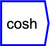
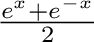

Next: tanh
Up: Functions/Unary Operators
Previous: sinh
Contents

hyperbolic cosine function

The operator can be placed on the canvas in two ways:
- From the Functions (``function'') toolbar; or
- By typing the letters ``cosh'' on the canvas and then pressing the
Enter key.